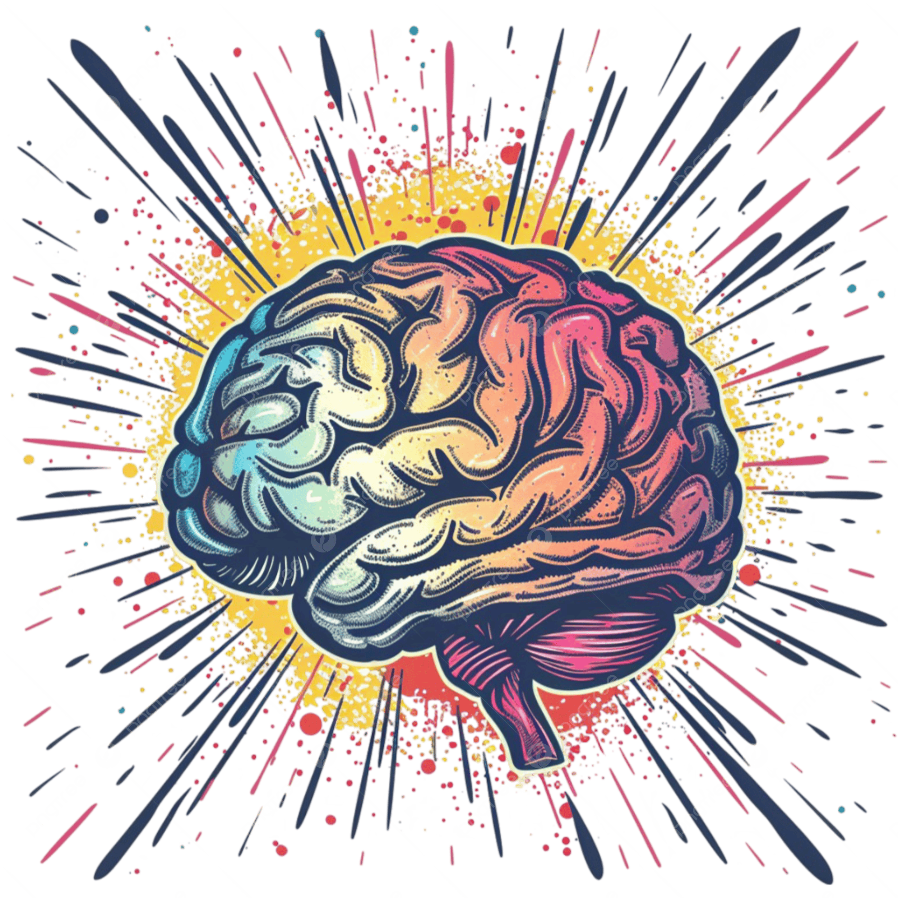
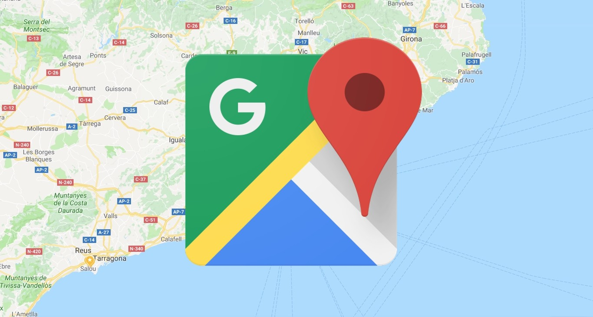

Explora tu mundo emocional con claridad y tranquilidad.
Descubre tu mapa emocional
→


Testimonios
Carlos, 35 años
"Nunca pensé que una app pudiera ayudarme a identificar mis estados de ánimo con tanta claridad. Ha sido un cambio increíble."
Sofía, 26 años
"Desde que uso MindTrack, puedo reconocer mis emociones y tomar mejores decisiones en mi día a día."